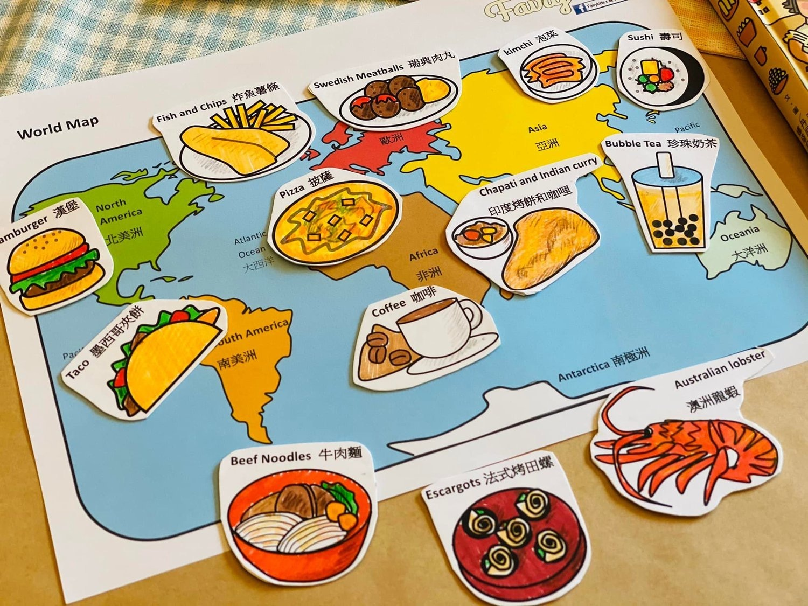

Food is a language that transcends cultures and borders. Let's explore unique cuisines from around the world, taste mouthwatering dishes with unique flavors, and learn about the cultures and stories behind them.
Discover the joys of food
We will take you through different countries and regions, introducing local specialties and traditional dishes
We'll also share some unique recipes and tips so you can make delicious international dishes at home
We will provide detailed steps and intimate tips to make it easy for you to become an excellent cook.
Whether it's sushi from Japan, kimchi from Korea, or roast duck from China, you'll have the opportunity to learn about the history, ingredients and preparation of these dishes.
Video
The interweaving of culture and cuisine
Gastronomy is part of a culture that reflects people's history, geography and social customs. In this website, you will learn about the eating habits of different countries, table manners and the special food of traditional festivals. By tasting and learning about these delicacies, you will have a deeper understanding of the culture of a country or region.
Start your food journey
Now, get ready to start your culinary journey! On this site, you'll find countless delicious dishes, mouth-watering photos and stories that will keep you hooked. Whether you want to become a global foodie, or are just curious about cuisines around the world, this website will provide you with the information and inspiration you need.

contact us
Please feel free to contact us if you have any questions, suggestions or cooperation on food. You can get in touch via email, social media or the contact form on our website. We look forward to hearing from you and providing you with help and answers.
Let's explore the taste buds of the world together!